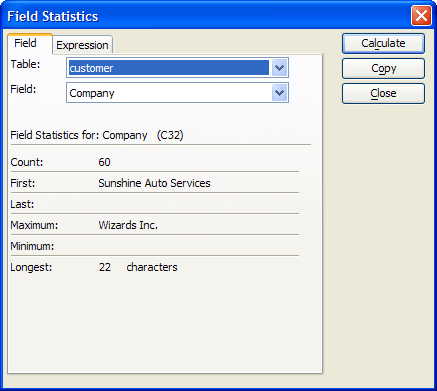
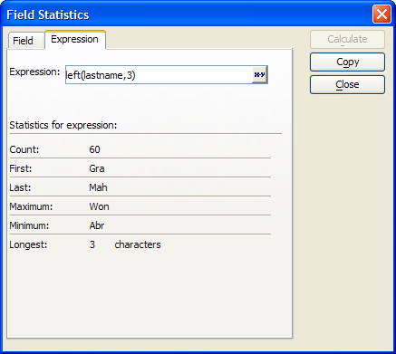

Using Field Statistics
The Field Statistics window displays several different statistics, such as total, average, minimum and maximum, for a field. To view Field Statistics :
To display the displays the Field Statistics dialog box while in a form or browse, press the Field Statistics button on the toolbar.

Field Statistics
Alpha Five computes statistics for all currently selected records. For example, to find the total orders from customers in California, you first perform a query (using any of the query tools) to select only California customers. Then, you click the Field Statistics button.
You can select the field for which you would like to compute statistics from a drop down combo box on the dialog. You can display field statistics for calculated fields. You can also copy the statistics to the clipboard.
The Field Statistics window is a modeless, real-time dialog box. Therefore, you can keep the Field Statistics window open while performing tasks in a browse. Click Calculate to update the dialog to reflect your work in the browse.
The Expression tab displays comparable statistics
for any expression based on one or more fields from the table. Optionally,
click  to open the <span class=Screen>Expression Builder</span> to help you compose the expression
to put in this field.
to open the <span class=Screen>Expression Builder</span> to help you compose the expression
to put in this field.
